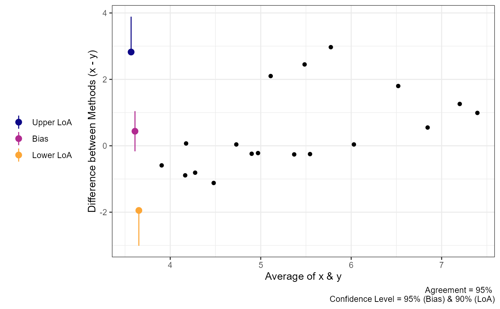
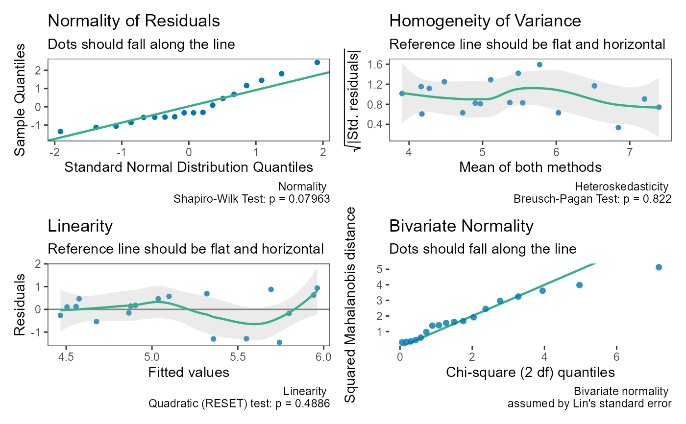

Methods for objects returned by ccc_test(). They print as standard
"htest" objects; summary() describes the result in words,
plot() shows the agreement between the two methods, and check() gives
diagnostics.
Arguments
- style
How
summary()words the result:"auto"(default),"hypothesis", or"estimation", as foricc_test()results (see reli_htest-methods).- ...
Not used.
- x, object
An object of class
ccc_htest.- type
For
plot():"identity"(default), the measurements ofyagainstxwith the line of identity (perfect concordance) and a Deming regression line, coloured by subject for replicate or nested data; or"ba", the Bland-Altman plot of the differences against the means (fromagreement_limit()with the same data type).
Value
summaryAn object of class
summary.ccc_htest(which prints likesummary.reli_htest): the description intext, thestyleused, the S-value (s.value, when there is a p-value), and the parts used to build it.plotA ggplot2 plot (see
type).checkDiagnostic plots combined with patchwork.
Details
summary() describes the estimate and its interval, what was estimated,
the design, and how the inference was done, in the hypothesis or
estimation style described in reli_htest-methods. For simple paired
data it also reports Lin's decomposition of the CCC into precision (the
Pearson correlation, r) and accuracy (the bias correction factor, C_b):
CCC = r x C_b. A low CCC can come from either.
check() shows the normality and heteroskedasticity of the differences
(as for agreement_limit() with the same data), and the linearity of the
relationship between the methods: the residuals of y regressed on x
against the fitted values, with a test of a quadratic term (Ramsey's
RESET test). The CCC, through its precision component, summarises a
linear relationship. Proportional bias is not shown: a slope different
from 1 between the methods lowers the bias correction factor C_b, so it
is part of what the CCC measures rather than a violation of its
assumptions. For simple paired data check() also shows a Q-Q plot of
the squared Mahalanobis distances of the pairs against a chi-square
distribution with 2 degrees of freedom: Lin's standard error assumes the
two measurements are bivariate normal, and points far above the line
suggest they are not. For replicate or nested data the linearity test
uses all pairs, which are correlated within subjects, so its p-value is
approximate; the U-statistic standard error makes few distributional
assumptions, so these panels mainly help interpret the CCC.
References
Lin, L. I. (1989). A concordance correlation coefficient to evaluate reproducibility. Biometrics, 45(1), 255-268. doi:10.2307/2532051
Ramsey, J. B. (1969). Tests for specification errors in classical linear least-squares regression analysis. Journal of the Royal Statistical Society: Series B, 31(2), 350-371. doi:10.1111/j.2517-6161.1969.tb00796.x
Examples
data("reps")
res <- ccc_test(x = "x", y = "y", data = reps)
summary(res)
#> The estimated CCC was 0.479 (95% compatibility interval [0.128,
#> 0.724]). Values in this interval are the most compatible with the data,
#> given the model and its assumptions. The estimate is Lin's concordance
#> correlation coefficient between x and y: how closely the pairs fall on
#> the line of identity. It combines precision (Pearson r = 0.577) and
#> accuracy (bias correction factor C_b = 0.831), CCC = r x C_b. The data
#> had 18 complete pairs. The interval uses Fisher's z transformation with
#> Lin's (1989) delta-method standard error, which assumes the two
#> measurements are bivariate normal.
plot(res)
 plot(res, type = "ba")
plot(res, type = "ba")

check(res)
